|
The Resisty
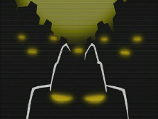
The
Resisty is a small group of aliens allied against the Irken Empire and
bent on stopping Operation Impending Doom II. They appear in the episode
Backseat Drivers from Beyond the Stars where they attempt to overcome
the Massive. They would also have appeared in the untitled season 2
finale if it wasn't cancelled.
|
|
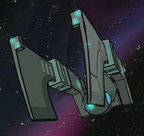 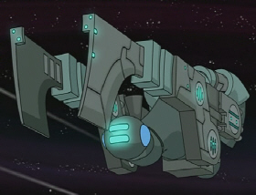 |
The Resisty make their first move with a Vortian
ship, using it to confront the Massive. It is no match for the Massive
and would've been blown up immediately in normal circumstances.
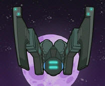
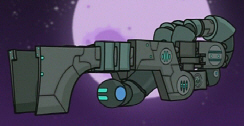 |
|
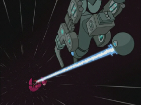 |
The Vortian ship was armed with 4 laser blasters on
the tips of its wings as well as one larger laser cannon at the back of
the ship. The cannon is a hovering ball at the very back of the ship. It
has the power to carve lettering into the Massive's hull ("RESISTY
ROCKS!") but not enough force to pierce the Massive. 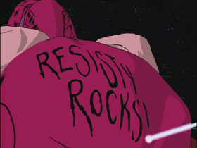 |
|
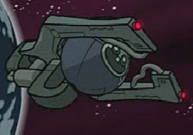 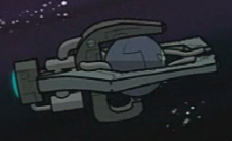 |
When the Resisty abandoned ship, they left in the
Vortian ship's escape pods.
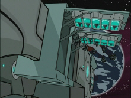
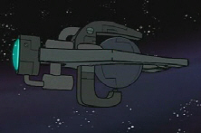 |
|
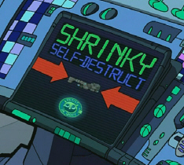 |
The Vortian ship has shrinky
self-destruct technology, which was put to use when it was caught in a
pull towards Earth. Instead of allowing potential enemies to gain
Vortian technology, Lard Nar opted for allowing the ship to shrink until
it disapeared.
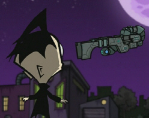 |
|
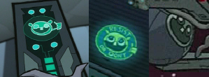 |
The Resisty logo can be seen in various places: Lard Nar's control
panel, on the Shrinky Self-Destruct screen, on the back of the Vortian
ship, and on the front of the escape pods. It appears to be the kid from
The Frycook What Came From All That Space giving a thumbs up. The
logo is sometimes accompanied by the slogan "RESIST OR DON'T" (much like
the restaurant "Eat or Don't" from Jhonen's comic I Feel Sick). |
|
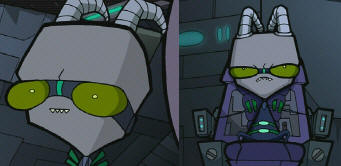 |
Name:
Lard Nar
Lard Nar is a Vortian from the conquered planet of Vort. He leads the
Resisty. He commands the ship from a chair attached to the wall by a
mechanical arm, allowing him to swivel around. Back in the day, Lard Nar
worked for the Irkens in a military research station on Vort. He was part
of the design team for the Massive, along with the Vortian who became
Prisoner 777. Here is a
picture of Lard Nar in his scientist days.
|
|
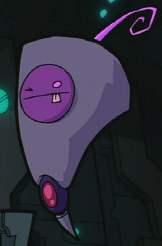 |
Name:
Shloonktapooxis
Lard Nar's right hand cone, Shloonktapooxis mans the laser cannon and
makes useless comments. He thought 'the Pirate Monkeys' was a good
name for the resistance.
|
|
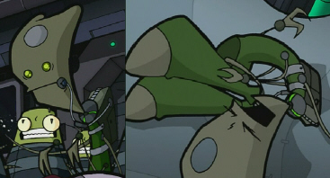 |
Name:
Spleenk Spleenk is full of bad ideas which
Lard Nar uses for some reason. He suggested attacking the Massive,
which almost got them all killed, and he also suggested the name 'the
Resisty.' He went into a spasmic fit when the ship was being pulled
towards Earth. |
|
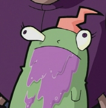 |
Name:
unknown This member of the Resisty is a
little green blob who vomits all over herself all the time. She looks
similar to the mascot of the restaurant Shloogorgh's Flavor Monster,
and thus is possibly from the same species. |
|
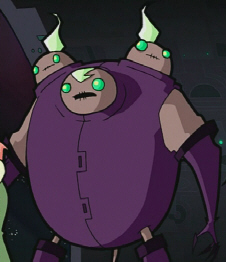 |
Name:
unknown
This member of the Resisty has 3
heads. He set the blob guy upright after it fell over.
Based on the designs of the scientists for the
unfinished episode The Trial, the three-headed alien might
have worked as a scientist with Lard Nar on Vort.
See this concept
sketch. |
|
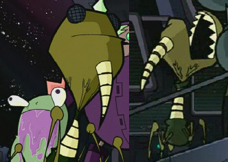 |
Name:
unknown This member of the Resisty is a
bug-like alien with 4 legs and no arms. Its appearance resembles a
more insectoid version of the Irkens. |
|
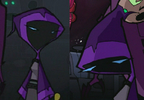 |
Name:
unknown This alien wears a cloak that
obscures what it looks like. She is the only Resisty alien besides the
vomity blob that is clearly female. |
|
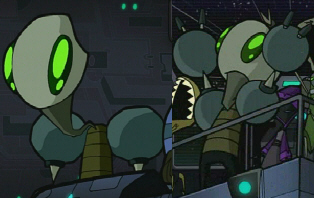 |
Name:
unknown Another member of the Resisty. |
|
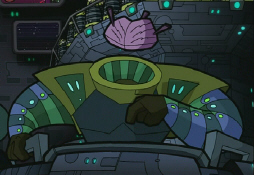 |
Name:
unknown This alien lacks a head, but has
its brain floating where its head would be. |
|
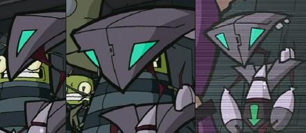 |
Name:
unknown This alien race is very robotic in
appearance. There are at least 2 of them on the ship. And they hover. |
|
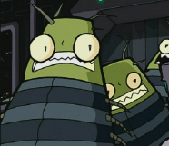 |
Name:
unknown There are a good deal of this type
of alien on the Resisty ship. Spleenk pushes through the crowd of them
whenever he has something to say. |
|
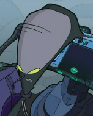 |
Name:
unknown
A few of these big-headed aliens sit at consoles.
One of them activates the shrinky self-destruct.
|


{kind=link}